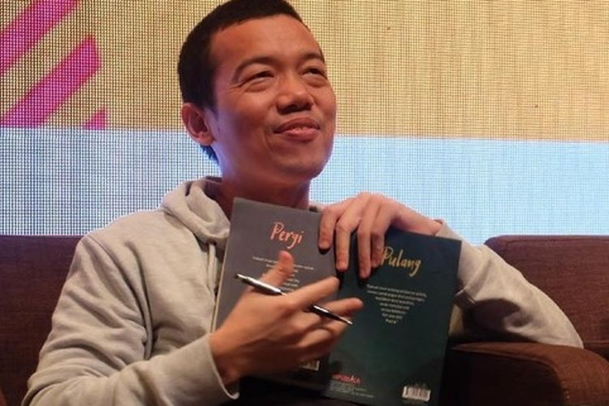

Tere Liye adalah nama pena dari Darwis, seorang penulis asal Indonesia yang dikenal luas melalui karya-karya novelnya yang mengangkat tema kehidupan, moralitas, dan nilai-nilai sosial. Ia lahir di Lahat, Sumatera Selatan pada 21 Mei 1979.
Sebelum menjadi penulis penuh waktu, Tere Liye pernah bekerja sebagai akuntan dan juga di bidang keuangan. Kini, ia dikenal sebagai salah satu penulis paling produktif di Indonesia dengan ratusan ribu pembaca setia.
Beberapa novel populer karya Tere Liye antara lain: